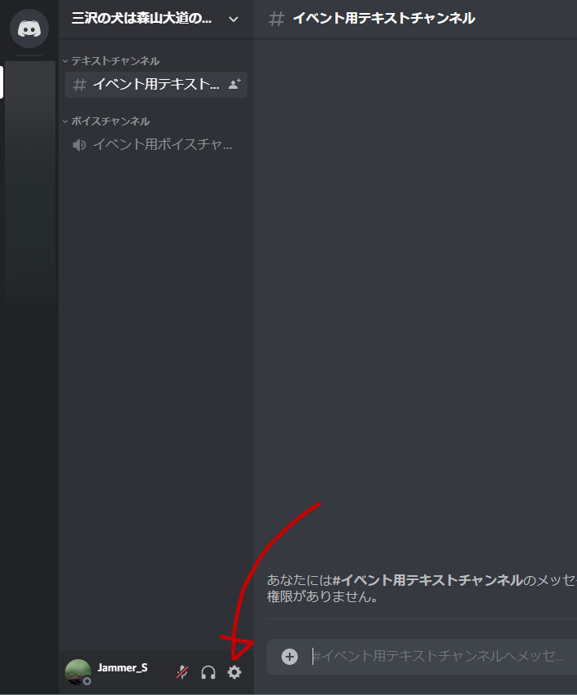
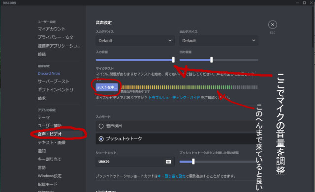

マイクテストのやりかた（PC編）
ボイスチャットを使う際、自分の声が相手にどう聞こえているかを確認しないで喋っていると、実は音質や音量がメタメタだったということがよくあります。
音質・音量が悪いと聞いてくれてる方が結構疲弊するほか、せっかく話しているのに実はぜんぜん聞こえていなかったなんてことがよくおきます。
ということで、以下に音量の調節と音質の確認方法を記しておきます。
ちなみに音質はともかく音量はマイクに近付いて喋ることでかなり改善できるので、そちらも合わせつつ↓の確認をしてみるといいと思います。
Discordを起動して、ウィンドウ左下の方にある歯車アイコン（↓下図参照）をクリックします。

その画面で「音声・ビデオ」タブをクリックすると↓のような画面が現れますので、そのなかの「確認しまし...」みたいになってるボタンをクリックします。
するとそのボタンが下図のように「テストを中...」みたいに変わりますが、この状態でマイクに向かって話すと、その横のレベルメーターが動いて入力されている音量が分かると同時に、あなたの声がヘッドホン（イヤホン）の方に聞こえてくるはずです。

↑ここで確認すべきは、
・まずはなにも喋らない状態でノイズが聞こえてこず、レベルメーターの音量も20%前後かそれより下（左側）にあること。
・次に普通の声で喋ってみて、自分の声がガサ付かずクリアに聞こえ、かつレベルメーターの音量も最大時7割程度の位置で安定すること。
・最後にマイクにちょっとだけ寄った状態で常識的な範囲で大きめの声を出し、音がひどく割れたりレベルメーターの針が振り切っていないこと。
この三点です。
特に普通に喋ってみてレベルメーターの針が6割くらいを越えないと、聞く側に声が伝わり難くなってしまいます。
上記三点について調整の必要を感じたなら、Discordで話す場合、および他の特殊な設定のないZoomのようなアプリを使う場合は、同じ画面の「入力デバイス」欄の下にある「入力音量」のバーを左右に動かすことで、音量を調整することができます。
付録 「 ユーザーごとの個別音量設定
」